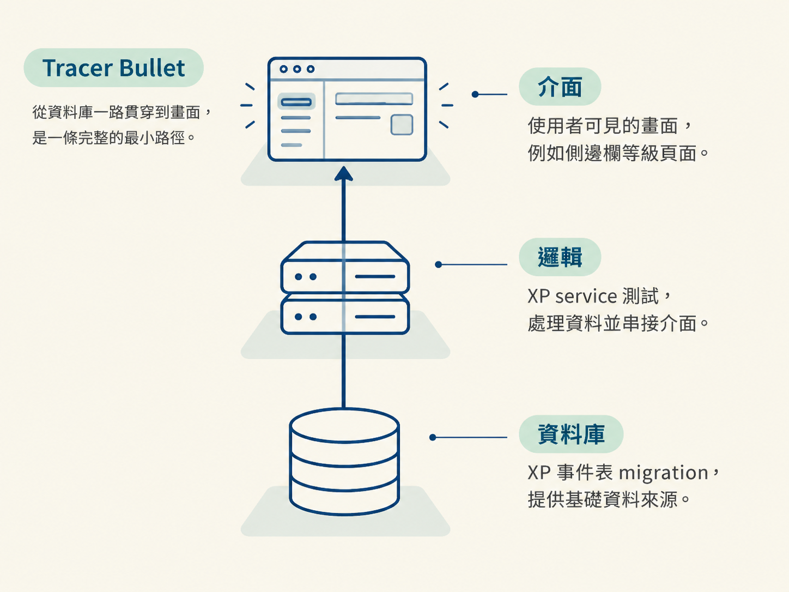
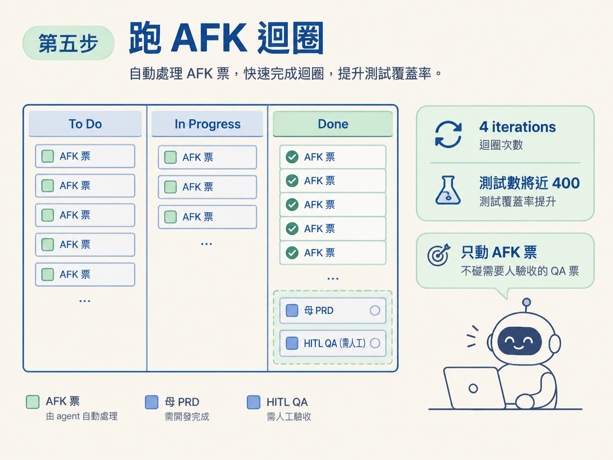
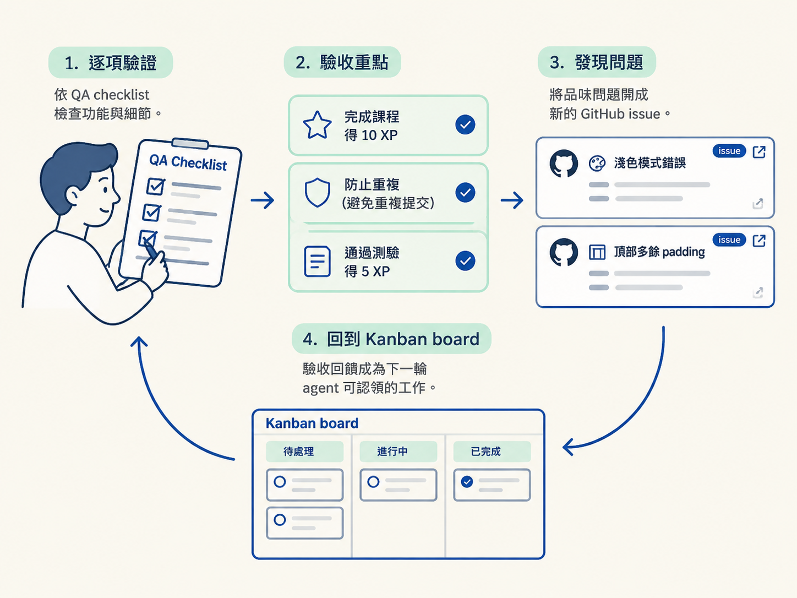

你會把剛生成的候選切片整理成可執行的 issue，先確認第一張票是不是合格的 tracer bullet，再合併過薄的切片，放行 agent 建立 issue。接著讓 AFK 迴圈自行處理工作，最後由你照著 QA checklist 驗收，並把驗收時發現的問題變成新的 issue。
你需要一板剛生成的候選切片清單。這些內容目前還沒有真的建立成 issue。另外，你要有一個能運作的 AFK 迴圈，以及可以修改 agent 設定的本機環境。
本機也要能執行資料庫 migration，因為最後驗收功能時，可能需要先把 agent 新增的 schema 套用到本地資料庫。
上一節結束時，issue tracker 上已經有一板剛生成的候選工作。這時不要急著叫 agent 開工。比較穩妥的做法，是先花幾分鐘檢查切片，再建立 issue，接著讓 AFK 迴圈處理不需要人介入的工作，最後由人坐下來完成 QA。
整個流程可以想成一道閘門：
最後，你會看到一板「AFK 票都已完成，只剩 QA 與後續回饋」的 backlog。這就是這一輪要交付的結果。
候選清單吐出來、還沒建立成 issue 之前，先檢查第一張票。它是整板工作的地基，不能只是某一層的局部工作。
這裡的 tracer bullet，指的是一條從資料庫一路穿到畫面的最小完整路徑。它像先打出一條細細的通道，雖然功能不大，卻能證明資料、邏輯和介面真的接得起來。

demo 裡的第一張票是：完成一堂課時得到 XP，並在側邊欄顯示等級。它同時包含：
這三段一次打通，就是合格的垂直切片。後面的票再從這條路徑往外延伸，例如加入 streak 追蹤、quiz XP，以及最後的驗收清單。
如果第一張票寫的是「先把所有資料表建好」或「先把所有 API 寫完」，代表它採用的是水平切法。這時要退回去請 agent 重切。地基如果是橫著鋪的，後面的每一張票都可能跟著失去方向。
接著掃過整份候選清單，找出小到不值得獨立執行的票。demo 裡的第四、第五張就是這種情況：內容太少，若各自啟動一輪 agent，反而會浪費溝通與執行成本。
遇到這種情況，就直接要求合併，例如：「把第 4 和第 5 張合併。」送出後，再重新確認合併後的內容。
判斷標準很簡單：若一張票單獨實作的成本，比它和另一張票合在一起還高，就應該合併。切片的目的，是讓工作容易認領與驗收，不是把工作切得越碎越好。
清單確認後，skill 會開始逐張建立 issue。預設情況下，每建立一張票就會停下來詢問一次權限；如果有十張票，就可能要確認十次。
若你已經確認切片方向正確，想減少這些重複確認，可以在 agent 的 settings.local.json 加入允許建立 issue 的權限：
bash: gh issue create建立 issue 是會對外產生影響的動作：它會通知人、進入 backlog，也可能被其他人看見。請先確認切片方向，再放行建立；不要在還不確定規劃是否正確時，就讓 agent 大量開票。
這項設定只是在允許 agent 建立 issue，不代表它可以任意修改你的 repo。如果你使用的不是 GitHub，而是其他 tracker，只要該工具提供 CLI 或 MCP server，也可以依照相同模式設定。
票建立完成後，到 issue 介面確認結果。母 PRD 那張票在 demo 裡是 #57，它會保持開啟，作為整組工作的來源；新的切片票則是 58 到 62。
隨便開一張切片票，你會發現內容通常很短：它只交代這張票要做什麼，並請執行者回到母 PRD 查看完整細節與驗收條件。這是刻意的設計。issue 不需要把 PRD 再複製一遍，它的任務是指路。
再打開最後一張 QA 票，裡面會有完整的勾選項目，列出需要由人親自驗證的內容。
讓 LLM 也看得到 QA 計畫，等於提前告訴 agent：「完成後，使用者會照這份清單逐項驗收。」這份清單就成了另一個約束：agent 不能只求功能跑得動，還要做到驗得過。
確認 issue 都準備好後，就可以開始跑自走迴圈。max iterations 可以設為 10；demo 作者後來把預設值提高到 100。
這個階段的角色是暫時離開螢幕，把不需要人工判斷的工作交給迴圈處理。agent 會依照依賴順序，一張一張完成 AFK 票。
回來後，板上應該只剩兩張開啟中的票：
demo 裡的迴圈跑了四個 iteration，就完成所有 AFK 票，測試數增加到將近 400。整個過程中，agent 只處理 AFK 票，沒有去動那張需要人驗收的 QA 票。

AFK 工作完成後，輪到你接手。先打開 QA 票，準備照清單逐項驗證。
不過，在進入畫面驗收之前，先處理資料庫 migration。agent 可能已經新增 schema，卻還沒有把變更套用到本機。demo 裡第一次進入 dashboard 時出錯，就是因為少了這一步。
先執行：
pnpm db migrate套用完成後重新整理頁面。如果原本的錯誤只是因為本機資料庫還沒更新，這時通常就能正常載入。
接著不要只快速點一下頁面，請按照清單驗證實際行為：
QA 除了確認「功能有沒有動」，也得留意實際用起來的感受。demo 的作者一邊驗收，一邊發現一些自己不滿意的地方，例如圖示在淺色模式下顯示不正確，以及頁面頂部有多餘的 padding。
這些問題未必代表功能壞掉，可能只是視覺或互動上的品味問題。但處理方式一樣清楚：
每個問題各開一張新的 GitHub issue。
如此一來，驗收回饋就會重新回到 board 上，變成下一輪 agent 可以處理的工作。你也不一定要一次跑完整份清單；如果 QA 很長，可以拆成幾個區段，先驗證重要部分。團隊合作時，也可以把 QA 交給專門的測試人員。

跑完這一輪後，所有 AFK 票都應該關閉，只剩下母 PRD 和那張由你親自勾選的 QA 票。
如果驗收過程中發現圖示、間距或其他品味問題，這些回饋也不會散落在聊天紀錄裡，而是已經變成新的開放 issue，等待下一輪處理。
這就是這套流程的重點：AFK 和 HITL 都被放在 backlog 裡，成為一等公民。規劃時，你可以先安排一大段不需要人持續盯著的工作；需要判斷的地方，例如切片覆核與 QA，則明確保留給人。人不必卡在實作的每一步，而是站在真正需要判斷的閘門上。
放行前，先確認第一張票是 tracer bullet，再合併過薄的切片。接著在settings.local.json允許gh issue create，建立 issue 並確認 board 內容。跑完 AFK 迴圈後，先執行 migration，再照 QA 清單逐項驗收。最後，把功能問題與品味上的不滿都變成新的 issue，讓回饋重新長回板子上。